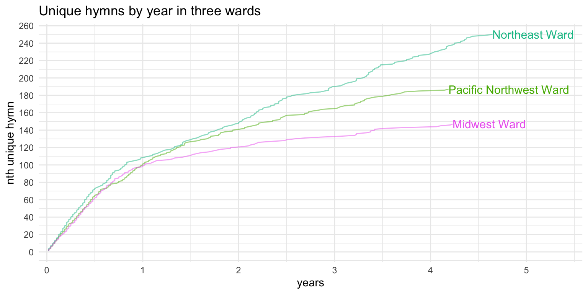
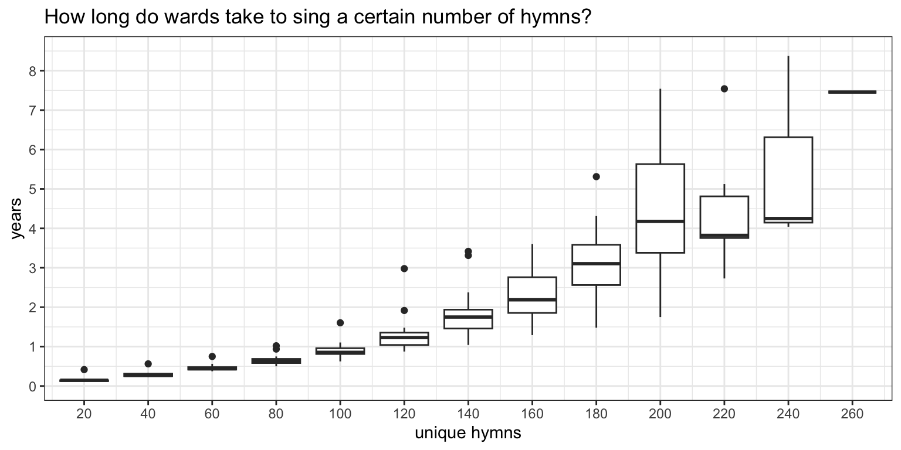
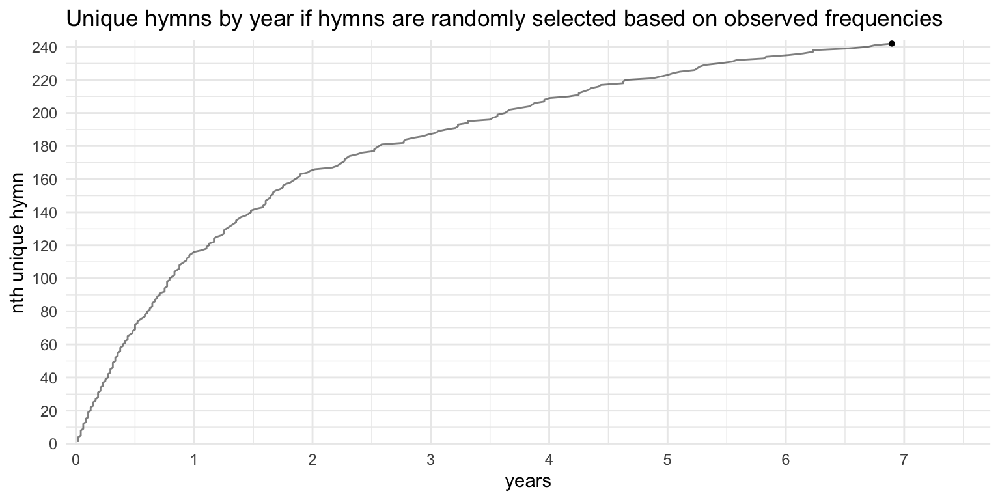
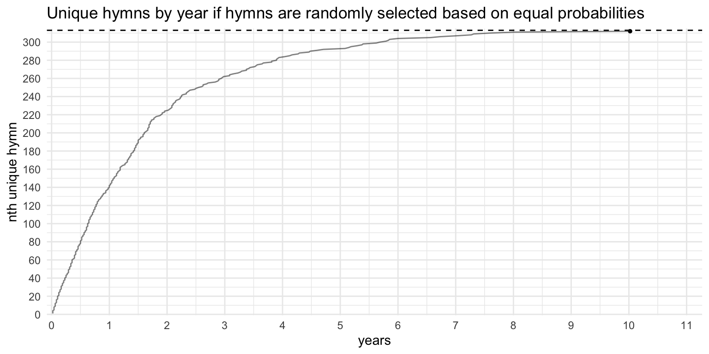

How many unique hymns does a ward sing in a year? Part 2
A much nerdier and more nitty-gritty analysis of trends over several years.
general
I was recently asked something along the lines of “how many hymns does a ward sing through?” Previously, I wrote that ward sing through about 105 unique hymns per year. However, the original question is slightly different than “how many does a ward sing in a year,” and the way it was asked implies that there are a certain set of hymns that a ward will pull from, and that there is essentially a “sealed portion” of hymns that are, for all intents and purposes, never used. My initial response was that there aren’t really hymns that are never used, it’s that not enough time has passed for them to be used. And then I thought it might make for an interesting blog post. So, let’s look at that a little more.
The leveling out effect
First, let’s think about what we expect to see. Given one year of data from a ward, we’d expect around 105 unique hymns. But, how many unique hymns would we expect in a two-year period? More than 105, but probably not 210. We’ll almost certainly be repeating sacrament hymns, most of the holiday hymns, and probably a fair number of well-known familiar hymns as well. So let’s say we sing maybe another 30 hymns in Year 2 that we didn’t sing in Year 1. What about a three-year period? How many hymns do we sing in that third year that we hadn’t already sung in Years 1 and 2? Probably not many at this point. Maybe another 10? How about a fourth year? A fifth year?
So, with each additional year of data, the number of new hymns being sung goes down. Eventually it’ll come close to leveling out, with maybe one new hymn a year or less. Mathematically, it has to level out because there are a finite number of hymns to choose from. But I don’t know of any ward that has sung all 341 hymns, so since there will almost always be at least one hymn that a ward has never sung, then it technically hasn’t zeroed out yet.
We can see this pattern in the data. Figure 1 shows how many unique hymns are sung, based on how much data I have from that ward. Each dot represents a ward and all wards in the entire dataset are plotted here. Most wards have less than a year’s worth of data, so they’re all plotted on top of each other in the lower left portion of the plot. But some wards have many more, and yes, I have almost 15 years of sacrament meetings from two wards!
What we see is the leveling effect I described above. Most wards are around 105 or so after one year of data, which coincides with my previous blog post. By the two-year mark, the blue line, which shows something like the average, is around 150 unique hymns. But, the data has fanned out a bit, so there’s more variation in how many hymns a ward will sing in two years. Some wards are higher (up to 180 unique hymns in two years) and others are lower (around 120).
Looking at specific wards
Let’s look at how this plays out within the context of a single ward. Figure 2 shows the pattern for a single ward in the Pacific Northwest, which, for anonymity, we’ll just call the “Pacific Northwest Ward.” From left to right are the four or so years of sacrament meetings. The line goes up if that ward sings a hymn it hasn’t sung before based on the data that I have. It might be useful to think of the point on the left being the first Sunday after the ward was organized, moving right is how many years has passed since it was organized, and from bottom to top is how many unique hymns that was has ever sung since it’s organization. The line then goes up every time the ward sings a hymn for the first time in that ward. This is essentially what it shows, except the point furthest to the left is not from the ward’s organization but from the earliest sacrament meeting I have data from.
I don’t know if I should be sharing ward names, so I’ll err on the safe side.
The general trend is that, as time passes, the ward will see fewer and fewer unique hymns. During the first six months, the line goes up pretty steeply—about as steeply as it can given the constraint of singing only about four hymns per week—because there are relatively few repeats in a six month period in this ward (and indeed in most wards). However, towards the end of the first year, the line gets a little less steep as some of the most popular hymns and sacrament hymns are repeated. At the one-year mark, the Pacific Northwest ward has sung exactly 100 unique hymns. Going into the second year, the line is noticeably flatter, and at two years, this ward has sung 140 unique hymns. So, during the second year, the ward sang about 40 hymns that it didn’t sing in the first year. The third year is more shallow still, and crosses the third-year mark at 165 hymns, meaning during that third year it sang about 25 hymns that it hadn’t already sung in the previous two years. At the end of Year 4, it’s at about 185, so it sang another 20 new hymns.
So, again, as more time passes, there are fewer new hymns. Now, that’s not to say that the longer a music coordinator is in their calling they choose fewer new hymns. Or that older wards have more repetition. Or that the first six months of a ward are the most interesting. It’s just that, with enough data, a ward will make it through more of the hymnal, and so there are fewer new hymns to draw from. There are diminishing returns when more time passes by. And there’s nothing special about the order either: if I were to put the dates in a random order, we’d see more or less the same curve.
Figure 3 overlays two more wards to the previous plot, one from the Northeast and one from the Midwest. As you can see, the trend is generally the same: a steeper include in the beginning and a shallower rise after a year or two. The first six months look pretty much the same across these three wards, but after about a year, they begin to diverge. The music coordinator in the Northeast ward appears to have made more of an effort to not repeat hymns, while the Midwest ward sang some familiar hymns more often.

Figure 4 overlays even more wards. In fact, all 20 of the wards that have contributed three or more years of data are shown here in this plot. We see that in all these wards, the general pattern holds true. The first six months to a year are remarkably consistent for each ward and most of them are between about 100 and 110 unique hymns. From there, they really begin to fan out, and I think that’s where the effort that music coordinators starts to become more apparent. Most wards slow down at the pace that the Pacific Northwest ward shown above are at. Some repeat hymns more often, meaning they sing fewer new hymns, so their line levels off sooner. Some sing a wider variety of hymns, so their line continues to rise for longer.
The one ward that has contributed the most data (we’ll call it the “Southern Ward”) is also remarkable because they have sung the most unique hymns. Over 14 years, any ward is like to get through most of the hymnal, but the Southern Ward showed signs early on that they tried not to repeat hymns. Even in the first year, their line rose more steeply than the others, which means they were repeating hymns less often. And their line rose about as quickly during the second year—by the end of two years they had sung 210 unique hymns which is quite remarkable. That’s more than most other wards had finished after several more years than that. In fact, we can compare to the other ward that contributed 14+ years of data, we see that it took this Rocky Mountain Ward ten years to sing the same number of unique hymns that the Southern Ward sang in two years.
The Southern Ward leveled off though. In the last six or so years of data, they only sang about five hymns they hadn’t sung in the previous nine years. But, looking through their data, there are still 40 hymns (excluding the men’s and women’s arrangements in the back) that they hadn’t sung in those 15 years, so in theory, the line could still go up if they continue to contribute data.
The Rocky Mountain Ward came close to leveling off as well, and in years 5–12, they only sang about 30 new hymns. The most recent data I have from them, it looks like they made an effort to sing hymns they had never sung before. I don’t know the history of that ward, but the sheer fact that I have this data means they kept track of it. And if they kept track of it, perhaps they reorganized their spreadsheet in such a way that highlights hymns they hadn’t sung yet and they purposely chose to include those where appropriate.
Each ward has its own story, but a few other wards are worth pointing out. Figure 5 shows three other wards’ data.
The Provo Ward contributed about nine years total, but their rise was inconsistent. They showed early signs of singing relatively few unique hymns and they began to level off by around three years. After two years, they had only sung 112 unique hymns, which is only a few more than what most other wards sing in one year. In their third year, they sang just nine new hymns. But then in their fourth year, they sang 30 new hymns and then leveled off again. For a year and a half (6.5–8 years in), they didn’t sing any new hymns. Then, they entered another phase of singing new hymns, and over the next year they sang 26 hymns that they hadn’t ever sung in the previous eight years. This is a very peculiar trend, and one that doesn’t just happen naturally. (A few other wards show similar patterns of leveling off and then rising again.) My guess is we’re seeing three different music coordinators over the course of these nine years, and the second two made a conscious effort to sing new hymns based on the spreadsheet that had been passed around.
Another interesting one is the Atlantic Province Ward, the largest contribution I have from Canada. They generally follow the same trend as other wards, but at around six years in, they seem to have short bursts of new hymns. Looking through their data more carefully, it seems like about every two weeks, the music coordinator chose a new hymn to sing. But then every about six months, two new hymns were introduced in a single meeting. The regularity of these bursts suggests that this was a conscious effort by the coordinator.
Finally, I show the Married Student Ward, not because it’s interesting, but because it’s remarkably regular. It started out steep as expected and gradually leveled off with hardly any deviations from the general pattern in over nine years. To me, this is indicative that whatever system that ward uses to keep track of and decide their hymns hasn’t changed in nine years.
Overall, most wards level off by around five years. Not too many wards have contributed more than that though so I can’t say for sure. But I think the leveling off that is apparent in finally gets at what the original question that sparked this blog post. For about 15 years, the Southern Ward sang only about 273 different hymns out of about 313 they could have sung. Rocky Mountain Ward drew from a smaller pool, about 244 hymns, in about 14 years. The Provo Ward leveled off for about a year and a half at 227 hymns and the Married Student Ward is close to leveling off at 208 hymns.
Conclusion
So, I can now answer the question of “how many hymns does a ward sing through?” I’ll say that a ward sings through roughly 210–275 hymns after several years. Of course, as I mentioned in the post about the least popular hymns, I have evidence that every hymn is sung at least once. So, not all wards draw from the same list of 210–275 hymns: some wards’ lists might be different than others. So, the ones that one ward will likely never sing will be sung in some other ward at some point. Together, they fill in each other’s gaps and collectively cover the entire hymnal.
Actual numbers
But what are those actual numbers? How long does it take to get to, say, 150 unique hymns in a ward? Unfortunately, because I have relatively few wards that have hit that threshold, the data gets a little sparse, but hopefully I can provide a number that gets close.
Figure 6 shows how many hymns these wards sang after a certain number of years. For each year, there is a boxplot that shows where most of the data lie, with the thick black line being the median. There is a clear leveling off effect as the years progress. (I’ve only shown through seven years because any more than that and the data gets too sparse.) Table 1 shows the same data but in tabular format.
| year | median number of total unique hymns | increase |
|---|---|---|
| 1 | 111 | 111 |
| 2 | 152 | 41 |
| 3 | 172 | 20 |
| 4 | 196 | 24 |
| 5 | 201 | 5 |
| 6 | 210 | 9 |
| 7 | 214 | 4 |
Another way of looking at the same data is to turn it sideways and ask how long it takes a ward to hit a particular milestone of, say, 150 hymns or 200 hymns. Figure 7 shows those results based on the wards in this sample. Up until about 180 hymns, there is a pretty regular pattern. After that, we run into data sparsity issues, so the results are a little wonky. Again, Table 2 shows the same data, but as a table. We see then that it’ll take a ward a little over two years to sing 150 unique hymns. And about four and a half years to sing its 200th hymn.

| unique hymns | time needed | time to next milestone |
|---|---|---|
| 20 | 2 months | 2 months |
| 40 | 3 months | 2 months |
| 60 | 6 months | 2 months |
| 80 | 8 months | 2 months |
| 100 | 11 months | 3 months |
| 120 | 1 year 4 months | 5 months |
| 140 | 1 year 10 months | 7 months |
| 160 | 2 years 4 months | 6 months |
| 180 | 3 years 2 months | 10 months |
| 200 | 4 years 6 months | 1 year 4 months |
| 220 | 4 years 6 months | |
| 240 | 5 years 7 months | 1 year 1 month |
| 260 | 7 years 6 months | 1 year 11 months |
Simulations
If you’ve made it this far, it means you care about this topic a lot. It also means you don’t mind some quantitative analysis. In this final section, it’s going to get even more technical. So, if you enjoy this kind of stuff, buckle up because it’s going to get fun.
Since I have data on how often every hymn is sung, I can treat those frequencies as probabilities. For example, since
| type | hymn |
|---|---|
| Opening | Let Us All Press On (243) |
| Sacrament | How Firm a Foundation (85) |
| Intermediate | I Believe in Christ (134) |
| Closing | The First Noel (213) |
Okay, so it’s a bit silly because we have a Christmas hymn as the closing hymn, a Thanksgiving hymn as the sacrament hymn, and no real sacrament hymn. Well, what if I change the parameters so that it only selects sacrament hymns for the sacrament hymns? And since we don’t always sing intermediate congregational hymns each week, I can have it return an NA about 46% of the time to match how often intermediate hymns are actually sung. With those, I can get a perhaps more plausible selection:
| type | hymn |
|---|---|
| Opening | Far, Far Away on Judea’s Plains (212) |
| Sacrament | Again, Our Dear Redeeming Lord (179) |
| Intermediate | NA |
| Closing | Praise to the Man (27) |
For now, I’m not going to worry about holiday hymns because it’d be too much of a hassle. But, with this random hymn generator, I can quickly simulate a sacrament meeting’s hymn selections. Well, what if I repeat that many times? Like 48 times? That’s a year’s worth of sacrament meetings. And what if I simulate more than that?
Well, so that’s what I did. I simulated several years’ worth of sacrament hymns for a ward. The hymns are randomly selected, with more commonly sung hymns in real life being more likely to be selected in the simulation. I then went through the same calculations as I did with the wards shown in Figure 4 to see how this simulated ward compared. Figure 8 shows what this simulated data looks like. For now, I’ll just show the first seven years of the simulation since that’s about as far as we could do with the real data.

As expected, the leveling off looks very much like what most of the wards shown above look like. The first year sees the most number of hymns and with each passing year, the line gets shallower and shallower. After about seven years, this simulated ward has sung 243 unique hymns, which is in line with what was mentioned above about how many hymns a ward sings before leveling out. We see such a pattern in real-life too: the Married Student Ward shown above looks very much like this, though the line doesn’t quite get so high as in this simulation.
However, this ward doesn’t appear to be leveling out. It’s still going up. How long did it take for the leveling out to happen? Better yet, how long did it take for all 313 of the hymns to be sung? Since this is simulated data, I can just generate some more data. So, I simulated 1000 years of sacrament meetings—which is nonsensical since for so many reasons: the hymnal has only been around for 38 years, the Restoration was only 193 years ago, the oldest hymn was written maybe 500 years ago, and heck we were speaking Old English back then. But, I can simulate it anyway to see what happens. Figure 9 includes the full dataset up until the points where it sings the last hymn. Here, I’ve added a horizontal dashed line at 313 to show the target. It took this simulated ward 213 years to sing all 313 hymns! It made it to 300 hymns in just 37 years, 308 hymns in 70 years, and from there at least a decade passed before hitting each of the remaining five hymns. Unsurprisingly, the last hymn was what is currently the rarest hymn in my sample,
Since those last few hymns were so infrequent, it makes sense that they took so long for simulation to get them. So, just to see what would happen, I changed the parameters of the simulation so that all hymns are equally common. How does that change the simulation? In this simulation, it took 8–9 years to hit the 313th hymn. Figure 10 shows that it takes far less time to reach the goal of 313 hymns.

So, I have two versions of simulated wards. What I can now do is overlay that over the actual data, as in Figure 11. Here we see some pretty interesting comparisions. Obviously, the simulated ward that treated all hymns as equal skyrockets to the top and hits the 313th hymn sooner than other wards even hit (or are projected to hit) their 213th hymn. Even within the first year, we see that that Unweighted Simulation ward is ahead of the curve and hits 146 unique hymns by the end of the first year. By the end of the second year, it’s at 225 hymns, which is 75 hymns more than what real wards typically are at at that point, and is more than where most wards get even with many more years of data. Obviously, this is unrealistic and no one should compare their ward to this one; it really should be treated as the fastest a ward could reasonably sing all the hymns, barring systematic cycling through them.
Perhaps more intersting is to look at the “Weighted Simulation Ward.” At one year, it is exactly on par with real wards. In fact, at two, three, and four years, it’s in the middle of the pack. After that point, real wards begin to level out while the simulated ward continues to rise. It only crosses the Southern Ward—which I’ve already pointed out as being pretty ambitious at singing through all the hymns—after about 15 years.
So, how do we interpret this data? The Weighted Simulation Ward pulls ahead of the pack while most real wards slow down. What is the difference then between the Weighted Simulation and the real wards? Well, real wards are run by real people. I do not want to discount any inspiration or spiritual promptings that may guide music coordinators in their decisions. But, real people have biases. And based on everything we’ve seen on this blog post, it appears that these biases mean that some music coordinators just don’t want to sing a certain set of hymns. Since the simulation has no such bias, it’s going to pick those unfamiliar hymns whenever the random number generator tells it to. So while the simulated ward pulls ahead, occasionally singing new hymns every once every few months or years, the real wards slow down and level off. As discussed already, some wards level off sooner than others, indicating that the avoidance of hymns is stronger in some people. The way this bias plays out in real life is that instead of singing an unusual hymn when it might be appropriate, a music coordinator will opt to sing a more familiar hymn instead.
Simulating the new hymnal
The last thing I want to do is simulate what these plots might look like ten years after the release of the new hymnal. I haven’t done much speculation about the new hymnal yet, but simulations are an interesting way to maybe see what the future might hold. The new one is supposed to have 450–500 hymns because it includes primary songs as well. I don’t know how that’ll work, like if the primary hymns will be intended to be sung in sacrament meeting or not, but let’s say they are. That means we’ll have well over 100 more hymns to draw from in the coming years.
The obstacle I have right now in my simulations is that I don’t have any information about how common those new hymns are. My probabilities for the existing hymns are based on frequencies, but I can’t do the same thing for hymns that haven’t been released yet! So, what I’ve done is essentially put the existing hymns in order of frequency, and then randomly intersperse another 163 more pretend-hymns and just assume that their frequency is the same as hymns nearby on the list. So, some new hymns will catch on and will be very common while others won’t. This brings the total number of hymns up to 475, which is in the middle of the expected range. If a new hymn was randomly placed immediately below a sacrament hymn, I considered that new hymn to be a sacrament hymn as well. I then simulated another 10 years of sacrament hymns from a single ward. Figure 12 compares this simulation to the existing simulation based on the existing hymnal.
Okay, so we immediately see that if there are more hymns to choose from, the number of unique hymns per ward increases. This makes sense: there are more to draw from so there’s less repetition. After a year, instead of having sung around 100 hymns, the new hymnal simulation suggests we’ll be at around 130 or so, which is quite a bit more than normal. Keep in mind that the simulation based on the existing hymnal was pretty close to what actual wards do for the first few years, so we can expect the same to be true of this new simulation. The only ward that hit 130 unique hymns in the first year was that Southern Ward, which, as already mentioned, appears to make an effort to sing many different hymns. So, once the novelty of the new hymnal comes out and things settle down into a new normal (so, maybe by the mid 2030s), we might expect that the diversity of sacrament hymns in a typical ward would be similar to what this one exceptional ward is doing now.
The difference between the current and new hymnal simulations gets greater as more time passes. By two years, the typical ward might have sung more hymns than any ward I have data for. After a few more years, the simulation likely overestimates the number of hymns sung in a ward because that’s what we saw with the other simulation. But, if I were to hazard a guess, I’d say after five or so years, a typical ward might settle on an expanded list of 325 hymns rather than the current observation of around 240.
Conclusion
So, let’s go back to the original question once again: “how many hymns does a ward sing through?” What seemed like an innocent question actually turned out to uncover some interesting patterns. What we’ve found is that it takes at least five years for a ward to “settle” on the set of hymns that they ultimately draw from, which is roughly 240 hymns give or take a couple dozen. Some wards will make efforts to sing more, while others have a larger list of hymns they’ll likely never sing. We observe a natural leveling out over time, so that fewer new hymns are sung the longer data is kept. Disruptions in this leveling out are likely due to changes in personnel and (my guess) probably involve careful notes about hymns that have been sung. Since new hymns typically appear gradually less often, it takes longer to hit milestones. It takes just one year to sing 100 hymns, about two to sing 150, and four to sing through 200 hymns.
Simulated data further reveals these biases that humans have. Assuming hymns are all eligible to be selected for sacrament meeting, with probabilities mirroring their frequencies, the simulated ward is on par with the real wards in this sample, but only for the first few years. After that, the real wards level out, suggesting that, at some point, music coordinators are opting to repeat a hymn rather than introduce a new one. The simulated ward continues to sing new hymns, but it took over 200 years to finally get to all of them! To me, this suggests that unless a ward makes a conscientious effort to sing every hymn, it is highly unlikely that you’ll sing all the hymns in the hymnal, even if you tracked them for your whole life! The simulations also reveal that once the new hymnal is introduced, we will likely see a wider variety of hymns being sung in sacrament meeting, with fewer repetitions.
This was a long and technical post, but I hope you enjoyed reading it as much as I enjoyed writing it!